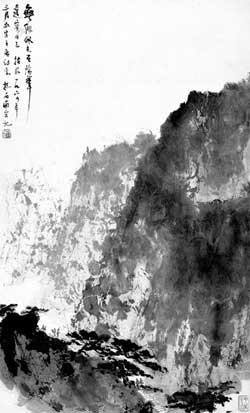

她，一个女人，在罪恶的男权社会里，并没有屈服于所谓的天命。特别在中国，这样一个男权传统至高无上的国度，她需要面对的局面是如此的险恶。如果说武媚娘走过的道路是艰难的，她首先在性上征服了中国男人的最高典范之一李世民，然后又在权力的斗争中击败了她的儿子，但毕竟其难度还是相对小一点，对阿斗般的高宗这样的对手，真有点胜之不武。
而她，面对的对手就完全不同。无论在性或权力上，她都面对着中国男权历史上最大的对手之一，而且在很多现在中国男人看来，无论哪方面，这个之一是可以取消。这个他，就是她的对手，而且后面还有一大群关羽张飞之类的猛男，诸葛亮类的智男。但她取得了胜利，这种胜利具有胜利所能具备的所有特质，首先是性上，然后是权力。性和权力，其实永远都只是同一问题的两面。
男人只能无力地污蔑她是当代武媚娘，参与这场污蔑的，都是所谓男人中的精英粪子、巨儒名流。这场无聊的诋毁，只能去证明男人智力的低下与能力的丧失。武媚娘又怎么了，当代武媚娘站在男权角度当然是罪恶的，但站在女权的角度，这就是最高的荣誉！
她，真正深刻地改变了中国的历史，正是她撕下了男人一切虚伪的面具。她，男人权力圈的真正斗士，中国现代史第一伟人！她的名字将永远镂刻在历史的丰碑上，中国的现代历史因她的存在而精彩。无论男人有多少污水泼向她，但即使所有诋毁她的男人身与名俱灭，她的名字，也依然耸立在历史的颠峰！